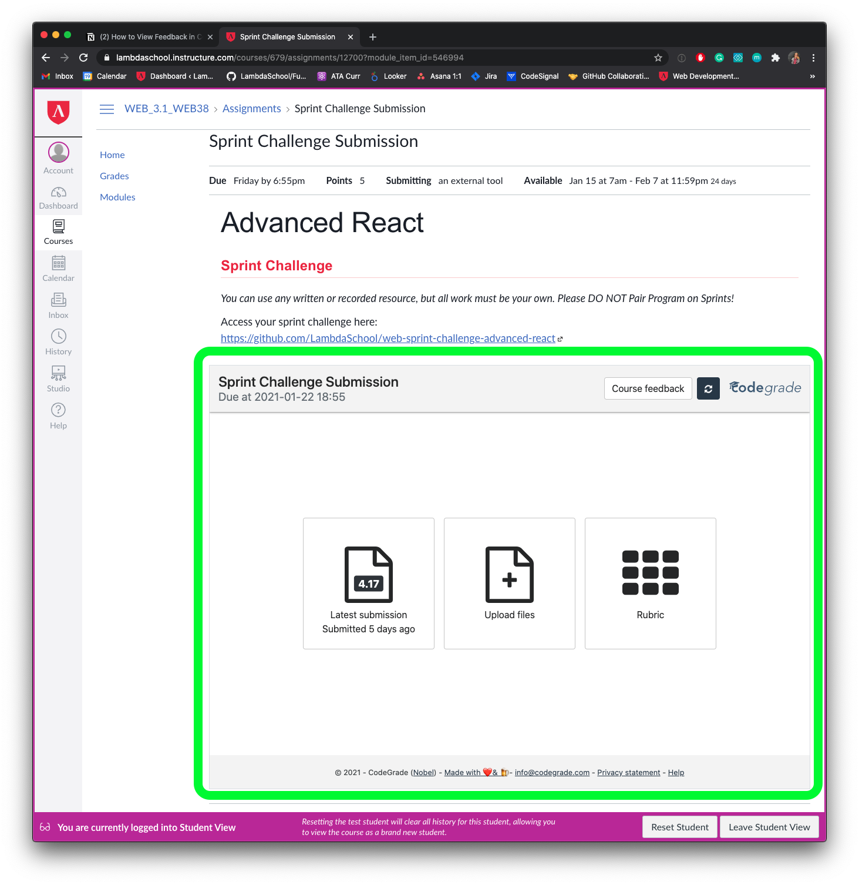
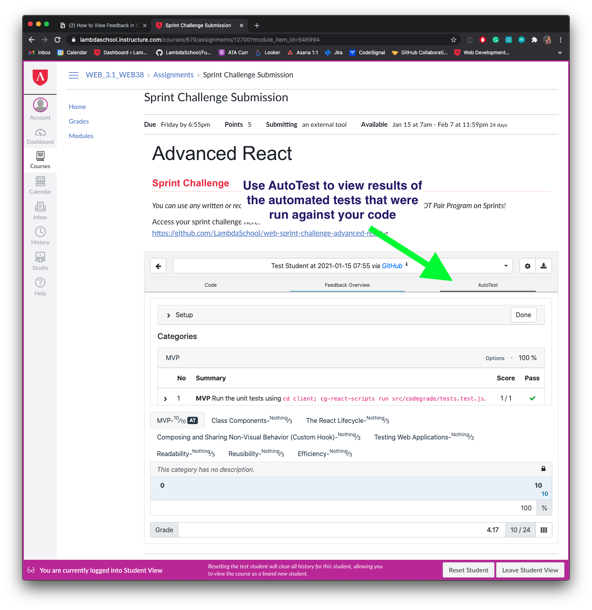
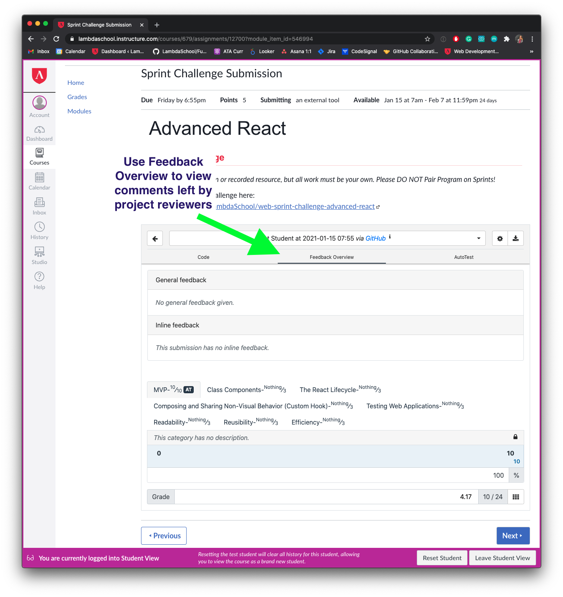
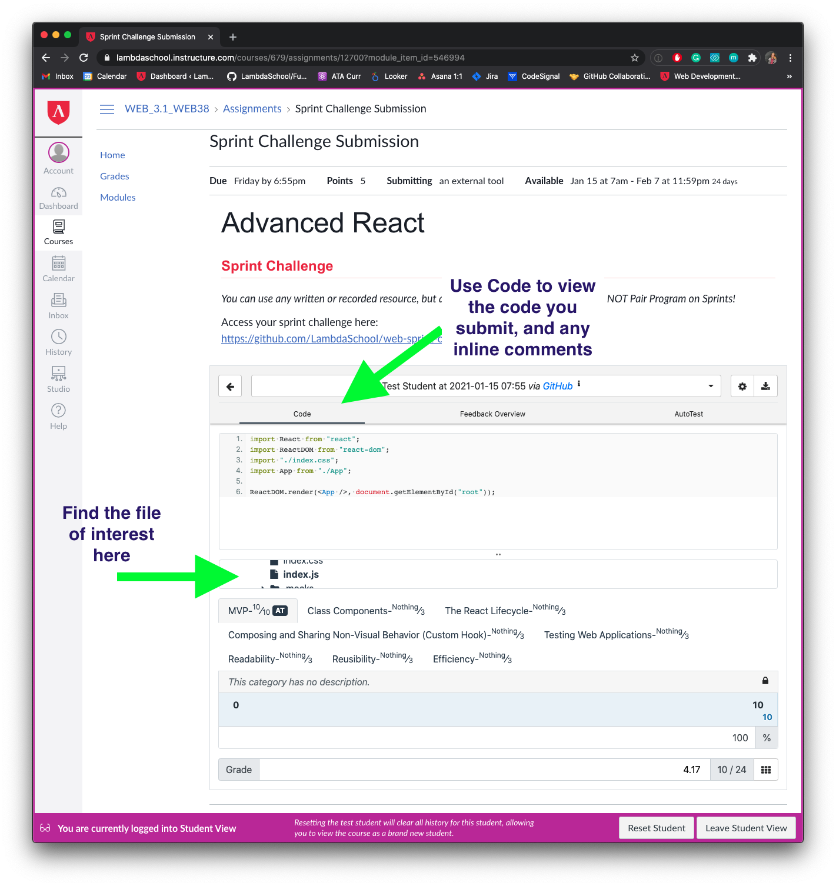
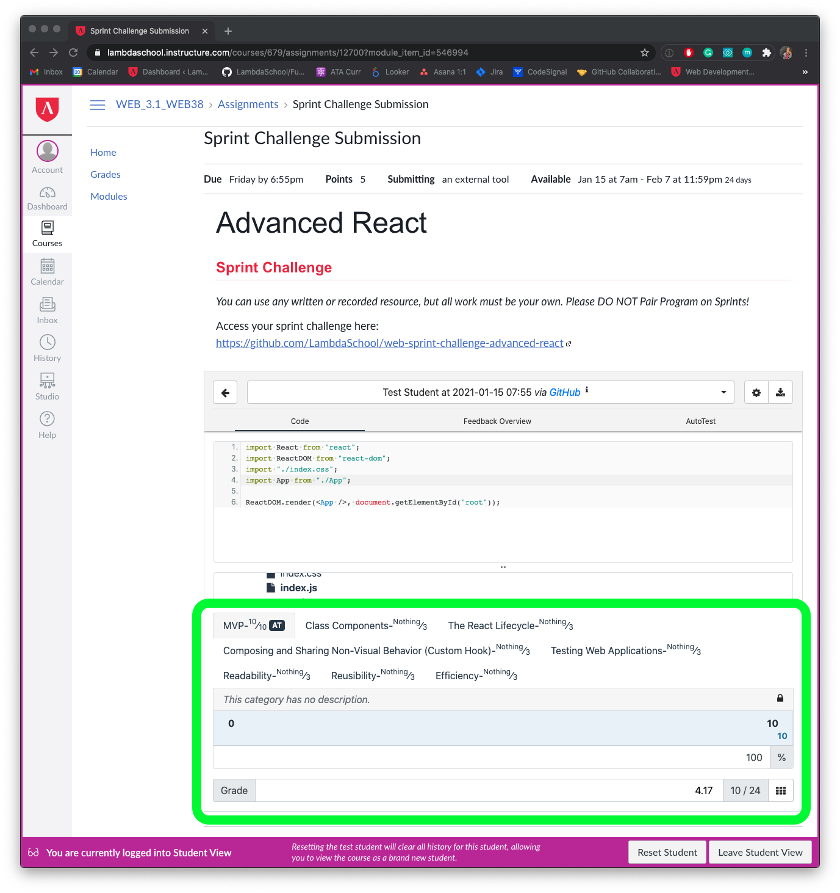

Navigate to your Sprint Challenge in Canvas and scroll down to the CodeGrade box and click "Latest Submission"


Feedback Overview tab will show you general feedback about your code
Code tab will show you inline comments, and the code you submitted

Read these instructions carefully. Understand exactly what is expected before starting this Sprint Challenge.
This challenge allows you to practice the concepts and techniques learned over the past sprint and apply them in a concrete project. This sprint explored advanced state management. During this sprint, you studied the reducer pattern, and redux.
In your challenge this week, you will demonstrate your mastery of these skills by creating the Smurf Village Database!
This is an individual assessment. All work must be your own. Your challenge score is a measure of your ability to work independently using the material covered through this sprint. You need to demonstrate proficiency in the concepts and objectives introduced and practiced in preceding days.
This is an individual assessment. All work must be your own. All projects will be submitted to codegrade for automated review. You will also be given feedback by code reviewers the Monday after challenge submissions. For more information on the review process click here.
You are not allowed to collaborate during the sprint challenge. However, you are encouraged to follow the twenty-minute rule and seek support by dropping a 👋 in your help channel when needed.
Sprint challenges open at Midnight PST on Thursday and close at 5pm PST on Friday. You will receive feedback on what you have finished and submitted by 5pm when the submissions will be closed. No retakes will be accepted.
In this challenge, you are to build a Smurfs village database utilizing Redux as your state management system. Build this challenge from the ground up using what you have learned about state management.
<firstName-lastName>.<firstName-lastName> branch, committing changes regularly.<firstName-lastName>.npm install to install your dependencies.npm start to start your application.<firstName-lastName>.git commit --allow-empty -m "first commit" && git pushYour finished project must include all of the following requirements. Unlike other projects, the local server used here can not be accessed through the browser. It is started automatically and without the need for starting a server.js file. Feel free to ignore any messages related to MSW or mock service workers. For this and the rest of your sprint challenges, test the functioning of the server directly through your axios calls.
Add in the needed state and reducer cases to hold and modify smurf error messages, loading status and smurf data. If at all possible, add in action cases one at a time, instead of all at once. Test your state connects and reducer cases as nessisary.
Adds the following state values into the initialState:
Add in the arguments needed to complete a standard reducer function.
Add in a reducer case to accomidate the start of a smurf fetch.
Add in a reducer case to accomidate the successful smurf api fetch.
Add in a reducer cases to accomidate the failed smurf api fetch.
Add in a reducer case to accomidate adding a smurf (including the name, nickname, position, summary and an internally generated id) into your smurf list.
Add in a reducer case that adds in a value to the error message.
Connect your application to reducer through redux with the thunk and logger middleware packages attached.
Add in the action creators and action constants needed to add a smurf to state and fetch smurfs from the server. If at all possible, add in action cases one at a time, instead of all at once. Test your state connects and reducer cases as nessisary.
Connect this component to redux passing in your fetchSmurfs action only.
Connect this component to redux, passing in your smurf array and loading status state values.
You do not need to modify this component.
Connect this component to redux passing in your error message state value, setError action and addSmurf action. Complete the form handling code.
Notes:
package.json file except to install extra libraries.IMPORTANT: Only work on stretch goals after completing your MVP!
When completing these goals, make sure to use a new branch to ensure your MVP code is not overwritten. You can branch off main by executing git checkout -b stretch. When you are fully sure your stretch code is ready for feedback, merge your stretch code with main using git checkout main and git merge stretch.
After finishing your required elements, you can push your work further. These goals may or may not be things you have learned in this module but they build on the material you just studied. Time allowing, stretch your limits and see if you can deliver on the following optional goals:
GET to the endpoint http://localhost:3333/smurfs.[ { id: "eyJhbGciOiJIUzI1NiIsInR5cCI6IkpXVCJ9", name: "Poppa Smurf", position: "Village Leader", nickname: "Pops", description: "Papa is the practical village leader and the father figure of 100 or so young Smurfs. He is easily identified by his red Smurf hat, pants, and a shortly-trimmed white beard and moustache.", }, ];
HINT if you are going to be working on Stretch Problem, you'll need to use that unique id.
Example of object created in Smurf DB:
[ { name: "Poppa Smurf", position: "Village Leader", nickname: "Pops", description: "Papa is the practical village leader and the father figure of 100 or so young Smurfs. He is easily identified by his red Smurf hat, pants, and a shortly-trimmed white beard and moustache.", }, { id: "JzdWIiOiIxMjM0NTY3ODkwIiwibmFtZ", name: "Smurfette", position: "Beautician", nickname: "Smurfette", description: "Smurfette's role in the village is that of any other smurf; chores, and helping out where she can, but for her specifically, she is often seen to be very active in organizing events.", }, ];
Be prepared to demonstrate your understanding of this week's concepts by answering questions on the following topics. Add your answers to the questions within interview_answers.md file. These will not be counted as a part of your sprint score but will be helpful for preparing you for your endorsement interview, and enhancing overall understanding.
actions, reducers and the store and their role in Redux. What does each piece do? Why is the store known as a 'single source of truth' in a redux application?redux-thunk allow us to do? How does it change our action-creators?